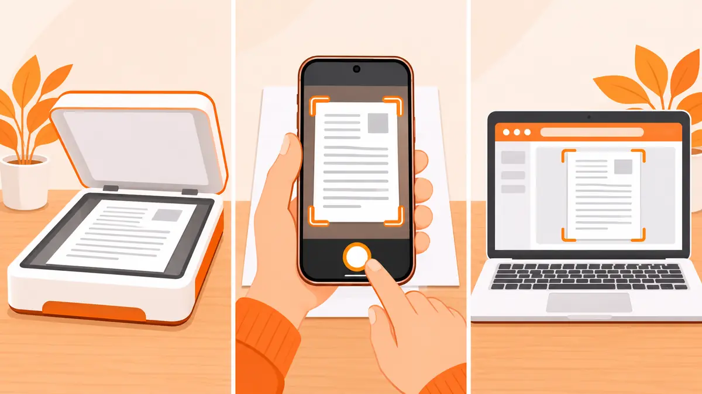
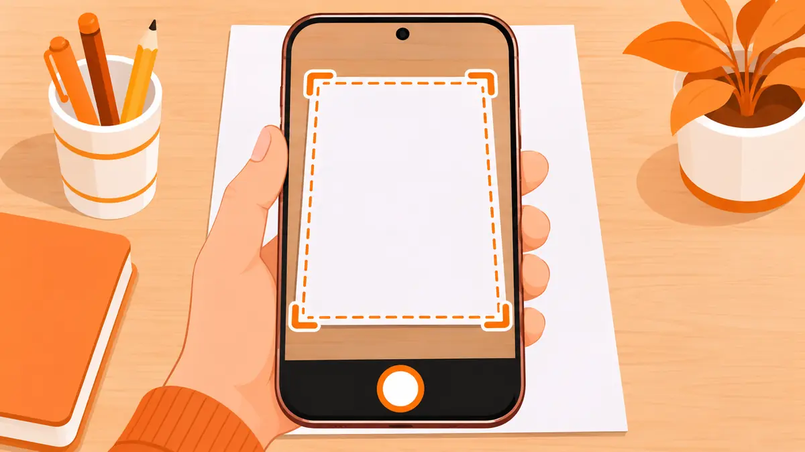

How to Scan a Document (Scanner, Phone or Online)
To scan a document, place it on a scanner and use Windows Scan or a Mac's Image Capture, or take a photo with your phone and let a scanner app crop it. With no app at all, upload the photo to an online scanner and download a PDF. Use 300 DPI for text and save as PDF.
No scanner nearby? Use the free scanner online in any browser.
What are the ways to scan a document?
There are three ways to scan a document, and the right one depends on what you have nearby.

| Method | Best for | What you need |
|---|---|---|
| Printer or flatbed scanner | Archives, books, photos, best quality | A scanner and a computer |
| Phone scanner app | Quick scans, daily use | A phone with Notes, Google Drive or a scanner app |
| Online scanner | Any device, no install | A photo of the page and a browser |
How to scan a document on Windows
- Turn on the scanner and connect it by USB or Wi-Fi.
- Put the page face down on the glass, lined up with the corner mark.
- Open the Windows Scan app (or Windows Fax and Scan on older PCs) and select your scanner.
- Choose the file type (PDF or JPG), colour mode and resolution, then pick a save folder.
- Click Preview, adjust the crop if needed, then click Scan.
Many printer brands also ship their own scan software. It works the same way and often adds a button for multi-page PDFs.
How to scan a document on a Mac
- Connect the scanner and place the page on the glass.
- Open Image Capture and choose your scanner in the sidebar.
- Click Show Details to set PDF format, resolution and the save location.
- Click Scan. To add more pages to one PDF, turn on the option to combine them into a single document.
How to scan a document with your phone
On an iPhone, open Notes, tap the camera or attachment button and choose Scan Documents. On Android, open Google Drive, tap the plus button and choose Scan. Both apps find the page edges and save a PDF.

Our full guide on how to scan documents on your phone covers each step and our test results.
How to scan a document online
To scan a document online, you only need a photo of the page. This works on any phone, tablet or laptop.
- Take a photo of the page from straight above, in even light.
- Open the PDFdukan scanner and tap Upload Images.
- Check the four corners and drag a handle if the frame misses the paper.
- Pick Magic Pro for white paper and dark text, or B&W for a smaller file.
- Tap Download PDF. Add more photos first to make a multi-page PDF.

The scanner runs in your browser, so your pages are not uploaded to our servers. To scan a printed photo instead of a page, use the photo scanner and keep the Original filter.
Which scan settings should you use?
- Resolution: 300 DPI for text and forms, 600 DPI for photos or tiny print.
- Colour mode: greyscale or black and white for text, colour for ID cards, stamps and signatures.
- File type: PDF for documents you will send or print, JPG for a single page you will upload as an image.
- File size: if a portal rejects a large scan, run it through Compress PDF.
How do you fix common scanning problems?
- Scan is crooked: line the page up with the glass edge, or use a scanner that straightens pages for you.
- Grey or shadowed background: use a document filter such as Magic Pro or No Shadow.
- Text is blurry: raise the resolution on a scanner, or hold the phone steady and clean the lens.
- Need to copy the text: run the scan through OCR image to text or make a searchable PDF.
- Pages in separate files: join them with Merge PDF.
Frequently Asked Questions
What is the easiest way to scan a document?
If you have no scanner, the easiest way is your phone: take a photo of the page and let a scanner app or a browser scanner crop and clean it into a PDF.
How do I scan a document to my computer?
Connect the scanner, open Windows Scan on Windows or Image Capture on a Mac, choose the scanner, pick PDF or JPG and a save folder, then press Scan.
How do I scan a document online?
Open an online scanner such as the PDFdukan scanner, upload a photo of the page, check the corners, pick a filter and download the PDF.
What resolution should I use to scan a document?
300 DPI is enough for text documents and forms. Use 600 DPI only for small print or photos you plan to enlarge.
How do I scan several pages into one PDF?
On a scanner, use the document feeder or scan each page and combine them with a merge tool. On a phone or online scanner, add every page before you export.